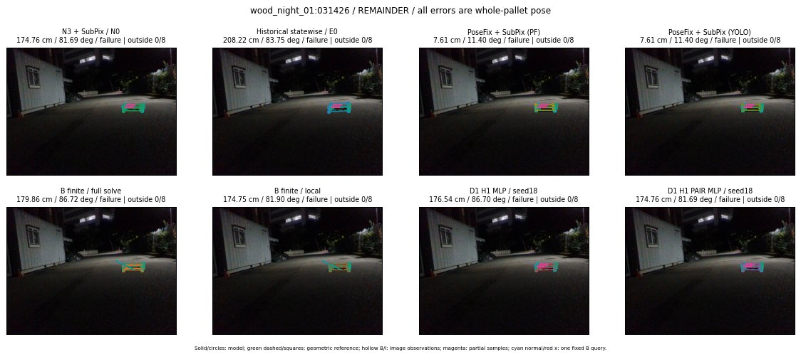

Whole-pallet pose errors; reference is a fixed geometric annotation, not certified physical GT.

Scores are uncalibrated logits. N0 retention is a numerical pose alias; it differs from H0 none or B fallback. B/I and profiles in baseline/B panels are original observations; L panels use new D1 observations. Only one deterministic supported B query is shown in a thumbnail; full support counts are below. Grey privacy rectangles edit the display copy only and are unrelated to O states; all observations were measured on original pixels. Thumbnails use JPEG quality85; detailed scientific panels are PNG.
| Method | Whole pose / cm, deg | Actual source | Selected ID | Score | Archived candidates | Eligible | N0 retained | H0 none | Fallback | Finite profiles |
|---|---|---|---|---|---|---|---|---|---|---|
| Raw YOLO + F | 183.08 cm / 81.36 deg / failure | OTHER | None | N/A | N/A | N/A | False | N/A | None | N/A |
| N3 + SubPix / N0 | 174.76 cm / 81.69 deg / failure | N0 | None | N/A | N/A | N/A | True | N/A | None | N/A |
| Historical statewise / E0 | 208.22 cm / 83.75 deg / failure | E0_REGENERATED | None | N/A | N/A | N/A | False | N/A | False | N/A |
| PoseFix raw | 185.78 cm / 80.60 deg / failure | OTHER | None | N/A | N/A | N/A | False | N/A | None | N/A |
| PoseFix + SubPix (PF) | 7.61 cm / 11.40 deg / failure | OTHER | None | N/A | N/A | N/A | False | N/A | False | historical support records 9; finite audit N/A |
| PoseFix + SubPix (YOLO) | 7.61 cm / 11.40 deg / failure | OTHER | None | N/A | N/A | N/A | False | N/A | False | historical support records 9; finite audit N/A |
| Historical L, seed18 | 174.76 cm / 81.69 deg / failure | N0 | N0 | N/A | 121 | 110 | True | True | True | N/A |
| Historical B fixed bank | 176.54 cm / 86.70 deg / failure | OTHER | G10/ORIGINAL_WD/sample/6 | N/A | N/A | N/A | False | N/A | False | N/A |
| Historical B full | 185.96 cm / 82.43 deg / failure | OTHER | NEW/B/ORIGINAL_WD/h0/LOGGED/G13/ORIGINAL_WD/outline_consider/99/PROPOSED_NATIVE_YAW_0 | N/A | N/A | N/A | False | N/A | False | N/A |
| Historical edge full | 127.89 cm / 88.71 deg / failure | OTHER | NEW/edge/ORIGINAL_WD/h0/LOGGED/G13/ORIGINAL_WD/outline_consider/99/PROPOSED_NATIVE_YAW_0 | N/A | N/A | N/A | False | N/A | False | N/A |
| Historical AB full | 185.96 cm / 82.43 deg / failure | OTHER | NEW/AB/ORIGINAL_WD/h0/LOGGED/G13/ORIGINAL_WD/outline_consider/99/PROPOSED_NATIVE_YAW_0 | N/A | N/A | N/A | False | N/A | False | N/A |
| B finite / fixed bank | 176.54 cm / 86.70 deg / failure | OTHER | G10/ORIGINAL_WD/sample/6 | N/A | N/A | N/A | False | N/A | False | 5/5 |
| B finite / full solve | 179.86 cm / 86.72 deg / failure | OTHER | NEW_FINITE/B/ORIGINAL_WD/h0/LOGGED/G13/ORIGINAL_WD/outline_consider/99/PROPOSED_NATIVE_YAW_0 | N/A | N/A | N/A | False | N/A | False | 5/5 |
| B finite / local | 174.75 cm / 81.90 deg / failure | OTHER | NEW_FINITE/B/ORIGINAL_WD/h0/N0_LOCAL_SAME_PHYSICAL_POSE/ORIGINAL_WD | N/A | N/A | N/A | False | N/A | False | 5/5 |
| Edge finite / full solve | 175.05 cm / 88.10 deg / failure | OTHER | NEW_FINITE/edge/ORIGINAL_WD/h0/LOGGED/G13/ORIGINAL_WD/outline_consider/99/PROPOSED_NATIVE_YAW_0 | N/A | N/A | N/A | False | N/A | False | 5/5 |
| D0 H0 MLP / seed18 | 174.76 cm / 81.69 deg / failure | N0 | N0 | -2.965639114379883 | 95 | 84 | True | True | True | N/A |
| D0 H0 MLP / seed19 | 174.76 cm / 81.69 deg / failure | N0 | N0 | -3.095526933670044 | 95 | 84 | True | True | True | N/A |
| D0 H0 MLP / seed20 | 174.76 cm / 81.69 deg / failure | N0 | N0 | -4.264258861541748 | 95 | 84 | True | True | True | N/A |
| D0 H1 MLP / seed18 | 176.54 cm / 86.70 deg / failure | OTHER | WD0/ORIGINAL_WD/sample/7 | -6.572472095489502 | 95 | 84 | False | False | False | N/A |
| D0 H1 MLP / seed19 | 176.54 cm / 86.70 deg / failure | OTHER | WD0/ORIGINAL_WD/sample/7 | -5.380680084228516 | 95 | 84 | False | False | False | N/A |
| D0 H1 MLP / seed20 | 176.85 cm / 87.15 deg / failure | OTHER | WD0/ORIGINAL_WD/sample/1 | -6.073034763336182 | 95 | 84 | False | False | False | N/A |
| D1 H0 MLP / seed18 | 174.76 cm / 81.69 deg / failure | N0 | N0 | 2.8854212760925293 | 95 | 84 | True | True | True | N/A |
| D1 H0 MLP / seed19 | 174.76 cm / 81.69 deg / failure | N0 | N0 | 2.948195457458496 | 95 | 84 | True | True | True | N/A |
| D1 H0 MLP / seed20 | 174.76 cm / 81.69 deg / failure | N0 | N0 | 2.4509084224700928 | 95 | 84 | True | True | True | N/A |
| D1 H1 MLP / seed18 | 176.54 cm / 86.70 deg / failure | OTHER | WD0/ORIGINAL_WD/sample/7 | -3.9776175022125244 | 95 | 84 | False | False | False | N/A |
| D1 H1 MLP / seed19 | 176.54 cm / 86.70 deg / failure | OTHER | WD0/ORIGINAL_WD/sample/7 | -3.7628300189971924 | 95 | 84 | False | False | False | N/A |
| D1 H1 MLP / seed20 | 176.54 cm / 86.70 deg / failure | OTHER | WD0/ORIGINAL_WD/sample/7 | -4.0629401206970215 | 95 | 84 | False | False | False | N/A |
| D1 H1 ROLE AFFINE / seed18 | 174.76 cm / 81.69 deg / failure | N0 | N0 | -1.1225545406341553 | 95 | 84 | True | False | False | N/A |
| D1 H1 ROLE AFFINE / seed19 | 174.76 cm / 81.69 deg / failure | N0 | N0 | -0.6116821765899658 | 95 | 84 | True | False | False | N/A |
| D1 H1 ROLE AFFINE / seed20 | 174.76 cm / 81.69 deg / failure | N0 | N0 | -0.9513430595397949 | 95 | 84 | True | False | False | N/A |
| D1 H1 PAIR MLP / seed18 | 174.76 cm / 81.69 deg / failure | N0 | N0 | -2.7306835651397705 | 95 | 2 | True | False | False | N/A |
| D1 H1 PAIR MLP / seed19 | 174.76 cm / 81.69 deg / failure | N0 | N0 | -2.789185047149658 | 95 | 2 | True | False | False | N/A |
| D1 H1 PAIR MLP / seed20 | 174.76 cm / 81.69 deg / failure | N0 | N0 | -3.729806661605835 | 95 | 2 | True | False | False | N/A |
| D1 H1 PAIR ROLE AFFINE / seed18 | 174.76 cm / 81.69 deg / failure | N0 | N0 | -1.5245245695114136 | 95 | 2 | True | False | False | N/A |
| D1 H1 PAIR ROLE AFFINE / seed19 | 174.76 cm / 81.69 deg / failure | N0 | N0 | -1.7526545524597168 | 95 | 2 | True | False | False | N/A |
| D1 H1 PAIR ROLE AFFINE / seed20 | 174.76 cm / 81.69 deg / failure | N0 | N0 | -1.7915946245193481 | 95 | 2 | True | False | False | N/A |
| Regenerated common E0 | 208.22 cm / 83.75 deg / failure | E0_REGENERATED | E0_REGENERATED | N/A | N/A | N/A | False | N/A | False | N/A |